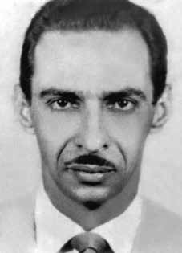

Carlos
Nicolau
Danielli
CIRCUNSTÂNCIAS DA MORTE
Carlos Nicolau Danielli, um dos líderes do Partido Comunista do Brasil (PCdoB), foi preso em São Paulo, no dia 28 de dezembro de 1972. Morreu dois dias depois, aos 43 anos, sob torturas, nas dependências do DOI-CODI, em São Paulo.
A versão oficial, divulgada por comunicado dos órgãos de segurança, informa que Carlos Nicolau Danielli teria sido morto em tiroteio com policiais. Passados mais de 40 anos, as investigações permitem concluir que a versão oficial, divulgada à época, não se sustenta. De acordo com os depoimentos de Maria Amélia de Almeida Teles e César Augusto Teles, militantes políticos presos junto com ele, Carlos Nicolau Danielli morreu sob torturas na madrugada de 30 de dezembro de 1972, nas dependências do DOI-CODI do II Exército, em São Paulo.
Segundo os depoimentos desses dois militantes, Carlos foi preso em 28 de dezembro de 1972. A partir dessa data, foi torturado sob o comando do então major do Exército Carlos Alberto Brilhante Ustra, do capitão Dalmo Lúcio Muniz Cirillo e do Capitão Ubirajara, codinome do delegado de polícia Aparecido Laerte Calandra. Apesar das torturas, seus algozes não conseguiram arrancar dele nenhuma informação. Mesmo muito ferido, respondia sempre de maneira altiva a seus inquisidores: “É disso que vocês querem saber? Pois é comigo mesmo, só que eu não vou dizer”. Afirmou diversas vezes: “Só faço o meu testamento político”.
No primeiro dia, foi torturado pela Equipe C, chefiada pelo capitão Átila e integrada pelo capitão Olavo, Mangabeira (apelido do policial Lourival Gaeta), Oberdan ou Zé Bonitinho. No segundo dia, foi submetido à tortura pela Equipe A, chefiada por Dr. José e integrada por Jacó, Rubens, Matos, Capitão Tomé e o investigador do Departamento de Polícia Federal Maurício, vulgo Lungaretti. No terceiro dia, foi torturado pela Equipe B, chefiada pelo capitão do Exército Orestes, vulgo Ronaldo, e seus subordinados: Capitão Castilho, o ex-policial do DOPS Pedro Mira Granzieri e o soldado da Aeronáutica Roberto, vulgo Padre. No quarto dia, novamente nas mãos da Equipe C, Carlos foi assassinado.
O depoimento judicial de César Augusto Teles contesta a versão oficial apresentada para a morte do militante: “Foram apresentadas a mim e à minha esposa manchetes de jornais que anunciavam a morte de Carlos Danielli como tendo tombado num tiroteio com agentes policiais. Sob nossos protestos de que ele havia sido morto em consequência e a cabo das torturas que sofreu na OBAN, fomos ameaçados de termos o mesmo destino […] E ficamos durante cinco meses incomunicáveis, certamente, por termos assistido ao brutal assassinato de Carlos Nicolau Danielli.”
Na Justiça Militar, há declarações do ex-preso político José Auri Pinheiro, que foi informado por um torturador, na Polícia Federal do Ceará, que Carlos Nicolau Danielli havia sido “exterminado”. No julgamento de Maria Amélia e César, no STM, em virtude de recurso impetrado pelo promotor, mais uma vez a denúncia da morte de Carlos veio à tona. A notícia foi divulgada pela imprensa, em 24 de abril de 1978, em O Estado de São Paulo: “No STM, novas denúncias em julgamento de presos.” A advogada Rosa Cardoso declara que Nicolau Danielli, cuja morte foi atribuída a um confronto com a polícia, é no mínimo suspeita. Isso porque Danielli foi preso juntamente com César e Maria Amélia Telles, e não parece possível que uma pessoa presa pela polícia possa ser armada por ela mesma.
As denúncias feitas no STM fizeram com que o ministro general Rodrigo Octávio Jordão requeresse a apuração dos fatos que envolveram a prisão e a morte de Carlos Nicolau Danielli, ainda que tivesse seu voto vencido. Em consequência das denúncias do casal César e Maria Amélia, as torturas e o assassinato do militante comunista chegaram a ser objeto de apreciação no STM, conforme foi divulgado em artigo publicado na Folha de S. Paulo, de 9 de maio de 1978: “O Superior Tribunal Militar negou a apuração das denúncias sobre as mortes do estudante Alexandre Vannucchi Leme e Carlos Nicolau Danielli, que teriam ocorrido no DOI-CODI do II Exército, pois somente o general Rodrigo Otávio pediu a apuração dos fatos, que considerou graves, assim como as várias denúncias de torturas feitas pelos acusados.”
Em seu voto, o general Rodrigo Otávio solicitou que as peças referentes às torturas e sevícias fossem encaminhadas ao procurador-geral da Justiça Militar, para apuração dos possíveis crimes previstos nos artigos 209, do Código Penal Militar, e 129, do Código Penal Comum. O general justificou o pedido demonstrando que “[…] a fragilidade das provas, trazidas como respaldo à veracidade da segunda hipótese, indicariam a necessidade de uma apuração mais completa sobre evento tão contundentemente grave”.
Em 1996, a relatora do caso na CEMDP, Suzana Keniger Lisbôa, destacou que “o laudo necroscópico, assinado pelos médicos legistas Isaac Abramovitc e Paulo A. de Queiroz Rocha, no dia 2 de janeiro de 1973, não descreve as torturas sofridas por Danielli e confirma a falsa versão policial de morte em tiroteio”. Ressaltou ainda que, na requisição do exame necroscópico e da certidão de óbito, o item “profissão” foi preenchido como “terrorista”.
Finalmente, em depoimento prestado, na 34ª audiência da Comissão da Verdade do Estado de São Paulo Rubens Paiva no dia 25 de abril de 2013, Maria Amélia de Almeida Teles, discorrendo sobre eventos que sucederam a morte de Carlos Danielli, relatou: “Mas eu sei que, no dia 5 de janeiro, o Calandra, que é o Aparecido Laerte Calandra, que é o Delegado de Polícia, […] que vive aqui em São Paulo, que também torturou o Danielli, também é responsável pela morte do Danielli, ele mostrou, ele me chamou, quer dizer, mandou me tirar da cela e levar, fui levada nesse dia pelo Marechal e mostrou um jornal. No jornal estava escrito uma manchete bem grande: ‘Terrorista morto em tiroteio’. E tinha a foto do Danielli, e torturado. […] Depois, eu descobri que era dia 5, muito depois que eu fui lá na biblioteca procurar os jornais daquela época e falei: ‘que jornal será que ele me mostrou?’ […] e aí eu vi que era dia 5 de janeiro. E o Danielli torturado, e aí eu falei assim com esse torturador, ‘não, mas isso não é verdade, isso é mentira, porque o Danielli foi morto aqui nessa sala, eu estava perto daquela sala, que eu estava ali no pé da escada, perto da sala onde o Danielli ficou’. E ele falou: ‘isso é para você ver, eu estou te falando friamente, você também pode ter uma manchete como essa porque aqui nós damos a versão que nós queremos para a morte de vocês’. Foi o que ele falou.”
Carlos Nicolau Danielli foi enterrado como indigente no Cemitério Dom Bosco, em Perus, na capital paulista. Após a promulgação da Lei de Anistia, seus familiares e amigos puderam sepultar seus restos mortais em Niterói (RJ), em 11 de abril de 1980.
Carlos Nicolau Danielli, one of the leaders of the Communist Party of Brazil (PCdoB), was arrested in São Paulo, on December 28, 1972. He died two days later, at the age of 43, under torture, on the premises of DOI-CODI, in São Paulo.
The official version, released in a statement from security agencies, states that Carlos Nicolau Danielli was killed in a shootout with police officers. More than 40 years later, investigations allow us to conclude that the official version, published at the time, is not sustainable. According to the testimonies of Maria Amélia de Almeida Teles and César Augusto Teles, political activists arrested with him, Carlos Nicolau Danielli died under torture in the early hours of December 30, 1972, on the premises of the DOI-CODI of the II Army, in São Paulo.
According to the testimonies of these two militants, Carlos was arrested on December 28, 1972. From that date on, he was tortured under the command of then Army Major Carlos Alberto Brilhante Ustra, Captain Dalmo Lúcio Muniz Cirillo and Captain Ubirajara, codename of police chief Aparecido Laerte Calandra. Despite the torture, his executioners were unable to extract any information from him. Even though he was very injured, he always responded haughtily to his inquisitors: "Is that what you want to know? Well, that's up to me, but I'm not going to say it." He stated several times: “I only make my political will”.
On the first day, he was tortured by Team C, led by Captain Átila and made up of Captain Olavo, Mangabeira (police officer Lourival Gaeta's nickname), Oberdan or Zé Bonitinho. On the second day, he was subjected to torture by Team A, led by Dr. José and made up of Jacó, Rubens, Matos, Captain Tomé and the investigator from the Federal Police Department Maurício, known as Lungaretti. On the third day, he was tortured by Team B, led by Army captain Orestes, alias Ronaldo, and his subordinates: Captain Castilho, former DOPS police officer Pedro Mira Granzieri and Air Force soldier Roberto, alias Padre. On the fourth day, again at the hands of Team C, Carlos was murdered.
César Augusto Teles's judicial testimony contests the official version presented for the militant's death: "My wife and I were presented with newspaper headlines that announced the death of Carlos Danielli as having fallen in a shootout with police officers. Under our protests that he had been killed as a result of and after the torture he suffered in OBAN, we were threatened with the same fate [...] And we remained incommunicado for five months, certainly, because we witnessed the brutal murder of Carlos Nicolau Danielli."
In the Military Court, there are statements by former political prisoner José Auri Pinheiro, who was informed by a torturer, at the Federal Police of Ceará, that Carlos Nicolau Danielli had been “exterminated”. In the trial of Maria Amélia and César, at the STM, due to an appeal filed by the prosecutor, once again the accusation of Carlos' death came to light. The news was released by the press, on April 24, 1978, in O Estado de São Paulo: “In the STM, new accusations in the trial of prisoners.” Lawyer Rosa Cardoso declares that Nicolau Danielli, whose death was attributed to a confrontation with the police, is at least suspicious. This is because Danielli was arrested together with César and Maria Amélia Telles, and it does not seem possible that a person arrested by the police could be armed by themselves.
The complaints made in the STM caused Minister General Rodrigo Octávio Jordão to request the investigation of the facts surrounding the arrest and death of Carlos Nicolau Danielli, even though his vote had been defeated. As a result of the complaints made by the couple César and Maria Amélia, the torture and murder of the communist militant came to be the subject of consideration in the STM, as was disclosed in an article published in Folha de S. Paulo, on May 9, 1978: “The Superior Military Court denied the investigation of the complaints about the deaths of the student Alexandre Vannucchi Leme and Carlos Nicolau Danielli, which had occurred in the DOI-CODI of the II Army, as only General Rodrigo Otávio asked for the investigation of the facts, which he considered serious, as well as the various allegations of torture made by the accused.”
In his vote, General Rodrigo Otávio requested that the documents relating to torture and abuse be forwarded to the Attorney General of Military Justice, to investigate possible crimes provided for in articles 209, of the Military Penal Code, and 129, of the Common Penal Code. The general justified the request by demonstrating that “[…] the fragility of the evidence, brought as support for the veracity of the second hypothesis, would indicate the need for a more complete investigation into such an extremely serious event”.
In 1996, the CEMDP case rapporteur, Suzana Keniger Lisbôa, highlighted that “the necroscopic report, signed by forensic doctors Isaac Abramovitc and Paulo A. de Queiroz Rocha, on January 2, 1973, does not describe the torture suffered by Danielli and confirms the false police version of death in a shootout”. He also highlighted that, in the request for the necroscopic examination and death certificate, the item “profession” was filled in as “terrorist”.
Finally, in a statement given at the 34th hearing of the Truth Commission of the State of São Paulo Rubens Paiva on April 25, 2013, Maria Amélia de Almeida Teles, speaking about the events that followed the death of Carlos Danielli, reported: “But I know that, on January 5th, Calandra, who is Aparecido Laerte Calandra, who is the Police Chief, [...] who lives here in São Paulo, who also tortured Danielli, is also responsible for Danielli's death, he showed me, he called me, that is, he ordered me to be taken out of the cell and taken, I was taken that day by the Marshal and he showed me a newspaper. The newspaper had a big headline: ‘Terrorist killed in shooting’. And there was a photo of Danielli, and he was tortured. […] Later, I discovered that it was the 5th, long after I went to the library to look for the newspapers from that time and said: ‘Which newspaper did he show me?’ […] and then I saw that it was January 5th. And Danielli was tortured, and then I said to this torturer, 'no, but that's not true, that's a lie, because Danielli was killed here in this room, I was close to that room, I was there at the bottom of the stairs, close to the room where Danielli was'. And he said: ‘this is for you to see, I’m telling you coldly, you can also have a headline like this because here we give the version we want for your death’. That’s what he said.”
Carlos Nicolau Danielli was buried as a pauper in the Dom Bosco Cemetery, in Perus, in the capital of São Paulo. After the promulgation of the Amnesty Law, his family and friends were able to bury his remains in Niterói (RJ), on April 11, 1980.
Carlos Nicolau Danielli, uno de los dirigentes del Partido Comunista de Brasil (PCdoB), fue detenido en São Paulo, el 28 de diciembre de 1972. Murió dos días después, a la edad de 43 años, bajo tortura, en las instalaciones del DOI-CODI, en São Paulo.
La versión oficial, difundida en un comunicado de los organismos de seguridad, afirma que Carlos Nicolau Danielli murió en un tiroteo con policías. Más de 40 años después, las investigaciones permiten concluir que la versión oficial, publicada en su momento, no es sostenible. Según los testimonios de María Amélia de Almeida Teles y César Augusto Teles, activistas políticos detenidos con él, Carlos Nicolau Danielli murió bajo tortura en la madrugada del 30 de diciembre de 1972, en las instalaciones del DOI-CODI del II Ejército, en São Paulo.
Según los testimonios de estos dos militantes, Carlos fue detenido el 28 de diciembre de 1972. A partir de esa fecha fue torturado bajo el mando del entonces mayor del Ejército Carlos Alberto Brilhante Ustra, el capitán Dalmo Lúcio Muniz Cirillo y el capitán Ubirajara, nombre clave del jefe policial Aparecido Laerte Calandra. A pesar de las torturas, sus verdugos no pudieron sacarle ninguna información. Aunque estaba muy herido, siempre respondía con altivez a sus inquisidores: "¿Es eso lo que queréis saber? Bueno, eso depende de mí, pero no lo voy a decir". Lo afirmó varias veces: “Yo sólo hago mi voluntad política”.
El primer día fue torturado por el equipo C, liderado por el capitán Átila e integrado por el capitán Olavo, Mangabeira (apodo del policía Lourival Gaeta), Oberdan o Zé Bonitinho. El segundo día, fue sometido a torturas por el Equipo A, liderado por el Dr. José e integrado por Jacó, Rubens, Matos, el capitán Tomé y el investigador de la Policía Federal Maurício, conocido como Lungaretti. Al tercer día, fue torturado por el Equipo B, liderado por el capitán del Ejército Orestes, alias Ronaldo, y sus subordinados: el capitán Castilho, el ex policía del DOPS Pedro Mira Granzieri y el soldado de la Fuerza Aérea Roberto, alias Padre. Al cuarto día, nuevamente a manos del Equipo C, Carlos fue asesinado.
El testimonio judicial de César Augusto Teles cuestiona la versión oficial presentada sobre la muerte del militante: "A mi esposa y a mí nos presentaron titulares de periódicos que anunciaban la muerte de Carlos Danielli por haber caído en un tiroteo con agentes de policía. Bajo nuestras protestas de que había sido asesinado como resultado y después de las torturas que sufrió en OBAN, fuimos amenazados con la misma suerte [...] Y permanecimos incomunicados durante cinco meses, ciertamente, porque fuimos testigos del brutal asesinato de Carlos Nicolau Danielli".
En el Tribunal Militar hay declaraciones del ex preso político José Auri Pinheiro, quien fue informado por un torturador, en la Policía Federal de Ceará, que Carlos Nicolau Danielli había sido “exterminado”. En el juicio de María Amélia y César, en el STM, debido a un recurso de apelación interpuesto por el fiscal, una vez más salió a la luz la acusación de la muerte de Carlos. La noticia fue difundida por la prensa, el 24 de abril de 1978, en O Estado de São Paulo: “En el STM, nuevas acusaciones en el proceso de los presos”. La abogada Rosa Cardoso declara que Nicolau Danielli, cuya muerte fue atribuida a un enfrentamiento con la policía, es al menos sospechoso. Esto se debe a que Danielli fue arrestado junto con César y María Amélia Telles, y no parece posible que una persona arrestada por la policía pueda estar armada por sí misma.
Las denuncias presentadas en el STM provocaron que el ministro general Rodrigo Octávio Jordão solicitara la investigación de los hechos que rodearon la detención y muerte de Carlos Nicolau Danielli, a pesar de que su voto había sido derrotado. A raíz de las denuncias del matrimonio César y María Amélia, la tortura y asesinato del militante comunista pasó a ser objeto de consideración en el STM, como se revela en un artículo publicado en Folha de S. Paulo, el 9 de mayo de 1978: “El Tribunal Superior Militar negó la investigación de las denuncias sobre las muertes de los estudiantes Alexandre Vannucchi Leme y Carlos Nicolau Danielli, ocurridas en el DOI-CODI del II Ejército, como sólo el general Rodrigo Otávio solicitó la investigación de los hechos, que consideró graves, así como de las diversas denuncias de tortura formuladas por los imputados”.
En su votación, el general Rodrigo Otávio solicitó que los documentos relativos a torturas y abusos sean remitidos al Procurador General de Justicia Militar, para investigar posibles delitos previstos en los artículos 209, del Código Penal Militar, y 129, del Código Penal Común. El general justificó la solicitud demostrando que “[…] la fragilidad de las pruebas, aportadas como sustento de la veracidad de la segunda hipótesis, indicaría la necesidad de una investigación más completa sobre un hecho de tan gravísima gravedad”.
En 1996, la relatora del caso del CEMDP, Suzana Keniger Lisbôa, destacó que “el informe necroscópico, firmado por los médicos forenses Isaac Abramovitc y Paulo A. de Queiroz Rocha, el 2 de enero de 1973, no describe las torturas sufridas por Danielli y confirma la falsa versión policial de la muerte en un tiroteo”. Resaltó además que, en la solicitud de examen necroscópico y certificado de defunción, el ítem “profesión” fue llenado como “terrorista”.
Finalmente, en declaración dada en la 34ª audiencia de la Comisión de la Verdad del Estado de São Paulo Rubens Paiva el 25 de abril de 2013, Maria Amélia de Almeida Teles, hablando de los hechos que siguieron a la muerte de Carlos Danielli, informó: “Pero sé que, el 5 de enero, Calandra, que es Aparecido Laerte Calandra, que es el jefe de policía, [...] que vive aquí en São Paulo, que también torturó a Danielli, también es responsable de la muerte de Danielli, me mostró, me llamó, o sea, ordenó que me sacaran de la celda y me llevaron, ese día me llevó el Mariscal y me mostró un periódico. El periódico tenía un gran titular: "Terrorista muerto en tiroteo". Y había una foto de Danielli, y fue torturado. […] Después descubrí que era el día 5, mucho después fui a la biblioteca a buscar los periódicos de esa época y dije: ‘¿Qué periódico me mostró?’ […] y entonces vi que era 5 de enero. Y Danielli fue torturada, y entonces le dije a este torturador, 'no, pero eso no es cierto, eso es mentira, porque a Danielli la mataron aquí en este cuarto, yo estaba cerca de ese cuarto, yo estaba ahí al pie de las escaleras, cerca del cuarto donde estaba Danielli'. Y él dijo: ‘esto es para que veas, te lo digo fríamente, también puedes tener un titular así porque aquí damos la versión que queremos de tu muerte’. Eso es lo que dijo”.
Carlos Nicolau Danielli fue enterrado como indigente en el cementerio Dom Bosco, en Perus, en la capital de São Paulo. Luego de la promulgación de la Ley de Amnistía, sus familiares y amigos pudieron enterrar sus restos en Niterói (RJ), el 11 de abril de 1980.